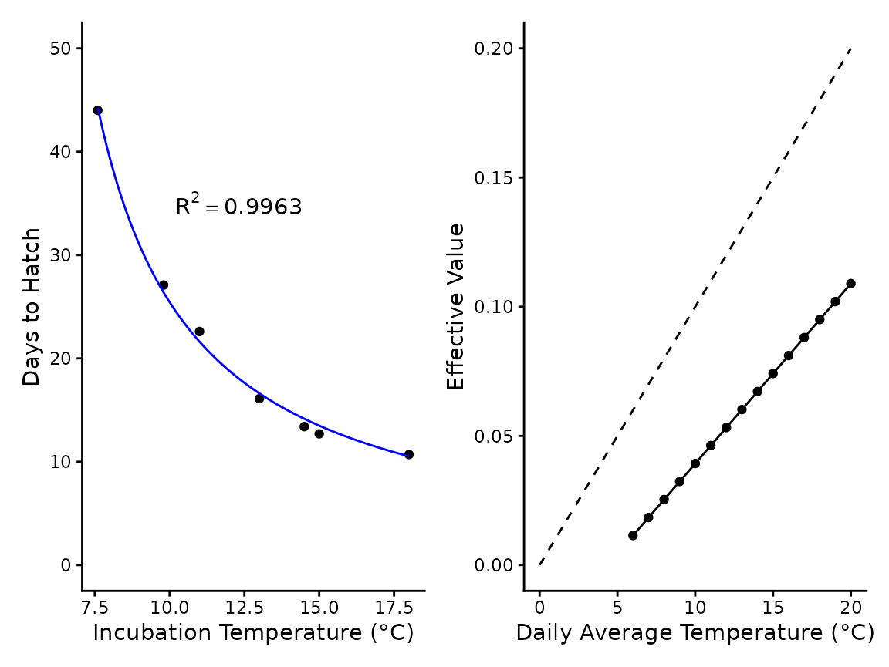
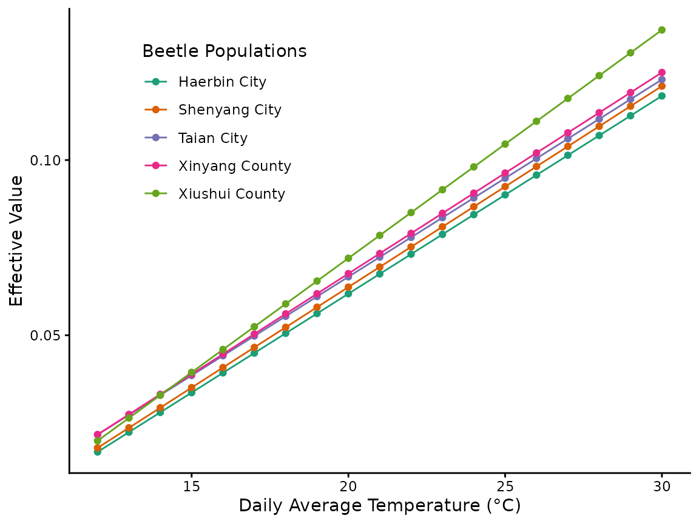

Because poikilotherms largely have a similar mechanistic relationship
with ambient temperature and developmental rates,
hatchR, may easily be applied to other non-fish
species. Unlike many examples in other articles on this website,
non-fish species will obviously rely exclusively on the
fit_model() function for creating developmental models. An
excellent starting place for potential model parameterization is the Model sources section below.
Here, we outline examples of how one can use developmental studies from peer-reviewed or grey literature to develop species- or population-specific models in a generalizeable format.
#libraries
library(hatchR)
library(patchwork)
library(ggplot2)
library(tibble)
library(dplyr)
library(purrr)A simple example: coastal tailed frogs
Tailed frogs (Ascaphus spp.) are common amphibians in the Rocky and Cascade Mountain regions of the northern United States and southern Canada, generally occupying the cold and fast-flowing habitat of headwater streams of the region. Compared to many other frog species, tailed frogs are comparatively slow growing and occupy colder habitats.
Brown (1975) raised coastal tailed frogs (A. truei) at temperatures ranging from 5-20 °C. Using those data we can easily parameterize a developmental model for coastal tailed frogs to be used in similar situations we present with fish.
First we set up the raw data from the study and parameterize the
model with fit_model():
### parameterize mod
ascaphus_data <- tibble(temp = c(7.6,9.8,11,13,14.5,15,18),
days = c(44,27.1,22.6,16.1,13.4,12.7,10.7))
ascaphus_mod <- fit_model(temp = ascaphus_data$temp,
days = ascaphus_data$days,
species = "ascaphus",
development_type = "hatch")To demonstrate the respective effective value at different daily temperatures we can evaluate our model across a vector of daily temperatures
### get effective values
temps <- c(6:20) # daily temps
#loop to calculate model expression at different temps
ef_vals <- NULL
for (x in temps) {
ef <- eval(parse(text = ascaphus_mod$expression$expression)) # call model expression
ef_vals <- rbind(ef_vals, ef)
}
# make data into plotable format
ascaphus_ef <- matrix(NA, 15, 2) |> tibble::tibble()
colnames(ascaphus_ef) <- c("temp", "ef")
ascaphus_ef$temp <- temps
ascaphus_ef$ef <- ef_vals[, 1]We can then demonstrate our fit and the effective values for a daily temperature:
### plot
fmt <- "~R^2 == %.4f" # format for R^2 val
lab1 <- sprintf(fmt, ascaphus_mod$r_squared) # R^2 label
# plot 1 of model fit
p1 <- ascaphus_mod$pred_plot +
labs(x = "Incubation Temperature (°C)", y = "Days to Hatch") +
lims(y = c(0, 50)) +
annotate("text", x = 10, y = c(35), label = c(lab1), hjust = 0, parse = TRUE)
# data table for 1 degree increase of temp for 0.01 increase in effective value for reference
data_1 <- tibble(t = c(0:20), e = seq(0, 0.20, by = 0.01))
#plot 2
p2 <- ascaphus_ef |>
ggplot() +
geom_point(aes(x = temp, y = ef)) +
geom_line(aes(x = temp, y = ef)) +
geom_line(data = data_1, aes(x = t, y = e), linetype = "dashed") +
# geom_abline(intercept = 0, slope = .01, linetype = "dashed") +
labs(x = "Daily Average Temperature (°C)", y = "Effective Value") +
theme_classic()
p1 + p2 
Multiple populations: developmental rates of cabbage beetles
The application of hatchR need not be limited to aquatic species, though many such putative species source data are available. Here we demonstrate how data from a clinal study on cabbage beetles (Colaphellus bowringi) from Tang et al. (2017) can be leveraged to understand population specific developmental rates, by generating effective value models for five separate populations.
# vector of experimental temps
tang_temps <- c(16, 19, 22, 24, 26, 28)
# vectors of population specific developmental rates at the above temperatures
hb <- c(24.834, 19.481, 14.172, 11.205, 9.865, 8.570)
sy <- c(23.822, 19.129, 13.644, 10.897, 9.645, 8.306)
ta <- c(21.887, 18.381, 12.984, 10.809, 9.382, 8.130)
xy <- c(21.623, 18.337, 12.589, 10.633, 9.205, 8.085)
xs <- c(21.271, 16.666, 11.797, 9.929, 9.117, 6.942)
# make a list of pops
pop_list <- list(hb, sy, ta, xy, xs)
# map fit_model() over our list of pops
beetle_mods <- pop_list |>
map(fit_model,
temp = tang_temps,
species = "cabbage beetle",
development_type = "hatch"
) |>
map("expression") |>
map("expression") |>
unlist()Now we have our five beetle models stored as character strings (to be parsed and evaluated later on).
beetle_mods
#> [1] "1 / exp(5.17706892381201 - log(x + -9.0421606255981))"
#> [2] "1 / exp(5.16085302320136 - log(x + -8.88858297163198))"
#> [3] "1 / exp(5.17970627971605 - log(x + -8.15597149804316))"
#> [4] "1 / exp(5.16007787601362 - log(x + -8.22714020853254))"
#> [5] "1 / exp(5.03375638770247 - log(x + -8.94965470593722))"To demonstrate the differences in developmental rates, we can turn each model into a reaction norm, much like we did in the second plot for the tailed frog example.
# data set up
temps <- c(12:30) # temps to iterate throug
pops <- c( # pops to iterate through
"Haerbin City",
"Shenyang City",
"Taian City",
"Xinyang County",
"Xiushui County"
)
ef_vals_pops <- NULL # NULL object to stor ef vals in
# loop stepping over temps and populations to create
# temperature and population specific ef values
for (m in 1:length(beetle_mods)) {
mod <- beetle_mods[m]
pop <- pops[m]
for (x in temps) {
ef <- eval(parse(text = mod))
temp_df <- data.frame(
temperature = x,
effective_value = ef,
beetle_pops = pop
)
ef_vals_pops <- rbind(ef_vals_pops, temp_df)
}
}After we run our loop to create population and temperature specific effective value estimates, we can plot each population’s effective value reaction norm.
ef_vals_pops |>
tibble() |>
ggplot(aes(x = temperature, y = effective_value, color = beetle_pops)) +
geom_line() +
geom_point() +
labs(x = "Daily Average Temperature (°C)", y = "Effective Value") +
scale_color_brewer(palette = "Dark2", name = "Beetle Populations") +
theme_classic() +
theme(legend.position = c(0.25, 0.75))
Model sources
The above examples are meant to inform how we can easily leverage the
fit_model() function for paramereterizing developmental
models for non-fish taxa. We recommend our other articles on this site
for examples of how these models may be leveraged for applied and basic
questions. We also stress that the assumptions made for fish (as well
taxa-specific ones not outlined here) should be considered when applying
these models. Here we provide a non-exhaustive list of putative model
sources for parameterizing developmental models for non-fish
organisms.
| Class | Order | Genus | Species | Study |
|---|---|---|---|---|
| Amphibia | Anura | Lithobates | L. sylvaticus | Moore (1939) |
| L. pipiens | ||||
| L. clamitans | ||||
| L. palustris | ||||
| Ascaphus | A. truei | Herbert A. Brown (1975) | ||
| Urodela | Ambystoma | A. gracile | Herbert A. Brown (1976) | |
| Reptilia | Squamata | Sceloporus | S. undulatus | Angilletta Jr., Winters, and Dunham (2000) |
| Podarcis | P. muralis | Van Damme et al. (1992) | ||
| Testudines | Mauremys | M. reevesii | Du et al. (2007) | |
| 181 species | 141 studies in While et al. (2018) | |||
| Insecta | Plecoptera | Nemurella | N. pictetii | John E. Brittain (1978) , Elliott (1984) |
| Capnia | C. atra | John E. Brittain, Lillehammer, and Saltveit (1984) | ||
| Capnia | C. bifrons | Elliott (1986) | ||
| Mesocapnia | M. oenone | John E. Brittain, Lillehammer, and Saltveit (1984) | ||
| Taeniopteryx | T. nebulosa | J. E. Brittain (1977) | ||
| Coleoptera | Colaphellus | C. bowringi | Tang et al. (2017) | |
| 18 species | Developmental equations in Pritchard and Leggott (1987) | |||
| Malacostraca | Decapoda | Pontastacus | P. leptodactylus | Aydın and Dilek (2004) |
| Copepoda | Calanoida | 10 genera | 28 species | Forster, Hirst, and Woodward (2011) |
| Cyclopoida | Limnoithona | L. tetraspina | ||
| Oithona | O. davisae | |||
| Harpacticoida | Microsetella | M. norvegica | ||
| Mesochra | M.lilljeborgi | |||
| Poecilostomatoida | Oncaea | O. venusta | ||
| Cephalopoda | Octopoda | Octopus | O. vulgaris | Márquez, Larson, and Almansa (2021) |
| O. mimus | ||||
| Myopsida | Loligo | L. vulgaris | ||
| L. reynaudii | ||||
| Oegopsida | Illex | I. coindetii | ||
| I. illecebrosus | ||||
| Todarodes | T.pacificus | |||
| Ommastrephes | O. bartramii | |||
| Asteroidea | Valvatida | Odontaster | O. meridionalis | HOEGH-GULDBERG and PEARSE (1995) |
| O. validus | ||||
| Asterina | A. miniata | |||
| Acanthaster | A. planci |